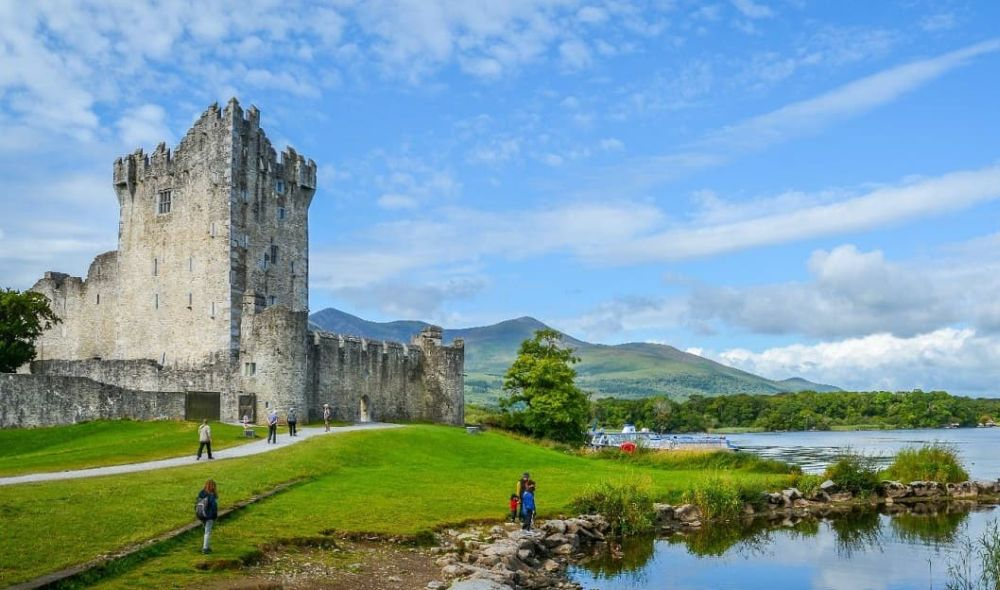

Descoperă Killarney - O incursiune în frumusețea naturală a sud-vestului Irlandei
Killarney este un oraș fermecător situat în sud-vestul Irlandei, cunoscut pentru frumusețea sa naturală și istorie:
-

Parcul Național Killarney - Peisaje pitorești
Acest parc impresionant oferă lacuri, munți și păduri spectaculoase, fiind un paradis pentru natură.
-

Muckross House - Patrimoniu istoric
Un conac elegant înconjurat de grădini frumoase, oferind o privire în viața aristocratică din trecut.
-

Castelul Ross - Cetate istorică
Această cetate de pe malul lacului oferă o priveliște pitorească și istorie bogată.
-

Gap of Dunloe - Peisaje spectaculoase
O defilare strâmtă printre munți, oferind priveliști uluitoare și oportunități pentru drumeții.
-

Căruțe tradiționale - Tradiții irlandeze
Puteți explora zona în căruțe tradiționale irlandeze, cunoscute sub numele de "jaunting cars".
Concluzii
Killarney este un loc deosebit care îmbină natura, istoria și tradițiile irlandeze pentru o experiență memorabilă.